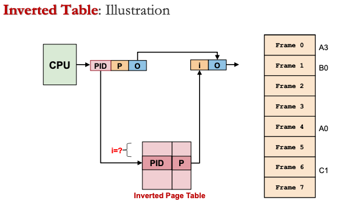
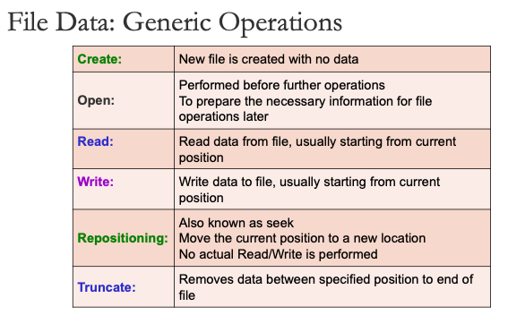
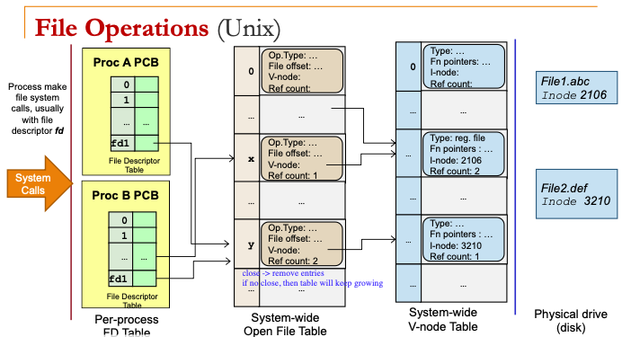

Inverted Page Table
- Page table is a per-process information
- With M processes in memory, there are M independent page tables
- Observation:
- Only N physical memory frames can be occupied
- Out of the M page tables, only N entries are valid!
- Huge waste: N << Overhead of M page tables
- Idea:
- Keep a single mapping of physical frame to
<pid, page#> - pid = process id , page# = logical page number in the corresponding the process
- page# is not unique among processes
- pid + page# can uniquely identify a memory page
- Keep a single mapping of physical frame to
- 
- Entries are ordered by frame number instead of page number
Page Replacement Algorithms
- No free physical memory frame during a page fault
- Memory access time: T access = (1 - p) _ T mem + P _ T page fault
- p = probability of page fault
- T mem = access time for memory resident page
- T page fault = access time if page fault occurs
Optimal Page Replacement (OPT)
- Replace the page that will not be needed again for the longest period of time
- Guarantees minimum number of page fault
- But future knowledge of memory references is needed
FIFO Page Replacement Algorithm
- Memory pages are evicted based on their loading time
- Evict the oldest memory page
- OS maintains a queue of resident page numbers
- But FIFO does not exploit temporal locality
Least Recently Used (LRU)
- Make used of temporal locality
- Replace the page that has not been used in the longest time
- But implementation is difficult
- Using a "time" counter: need to search through all pages to find the smallest
- Using a "stack": hard to implement in hardware because it is not a pure stack
Second-Chance Page Replacement (aka CLOCK)
- Modified FIFO to give a second chance to pages that are accessed
- Each page table entry has a reference bit
- Degenerate into FIFO algorithm
Algorithm:
- The oldest FIFO page is selected (victim page)
- If reference bit == 0, page is replaced
- If reference bit == 1, page is skipped and reference is cleared to 0
Frame Allocation
- Best way to distribute N physical memory frames to M processes competing for frames
- Equal allocation
- Each process gets N/M frames
- Proportional allocation
- Each process gets size_of_process / total_size * N frames
- Victim page selected among pages of the process that causes page fault: local replacement
- Number of frames allocated to a process remain constant
- If frames allocated not enough, it may hinder the progress of process
- Victim page selected among all physical frames: global replacement
- Allow self-adjustment between processes
- Badly behaved processes can steal frames from other processes
- Thrashing
- Insufficient physical frame
- In global replacement: A thrashing process "steals" page from other process cause other process to thrash (Cascading Thrashing)
- In local replacement: thrashing can be limited to one process, but that process can use up the I/O bandwidth and degrade performance of others\
- Right number of frames: working set
- Transient region: working set changing in size
- Stable region: working set about the same for a long time
File Management

- Common file types:
- regular files: contains user information
- Directories: system files for file system structure
- Special files: character/ block oriented
- File types:
- Use file extension as indication
- Use embedded information in the file (magic number stored at beginning of file)
File Protection
- Controlled access to the information stored in a file
- Access: read, write, execute, append, delete, list
- Users classified into three classes:
- Owner
- Group
- Universe
- Define permission of three access types: r w x r w x r w x
- Access control list can be
- Minimal (same as ppermission bits)
- Extended (added named users/ groups)
File Data
- Structure
- Array of byes
- Each byte has a unique offset from file start
- Fixed length records
- Array of records that can grow and shrink
- Variable length records
- Flexible but harder to locate
- Array of byes
- Access methods
- Sequential access
- Data read in order, starting from beginning
- e.g. cassette tapes
- Random access
- Data can be read in any order
- Read (offset): every read operation explicitly states the position to be accessed
- Seek (offset): special operation to move to a new location in file
- Direct access
- Used for file that contains fixed-length records
- Allow random access to any record directly
- Sequential access
- 
- OS provides file operations as system calls
- Provide proection, concurrent and efficient access

File Information
- Information kept for an opened file
- File pointer: keep track of the current position within a file
- File descriptor: unique identifier of the file
- Disk location: actual file location on disk
- Open count/ reference count: number of proccesses that have the file opened
- 
- Per-process open-file table:
- To keep track of the open files for a process
- Each entry points to the system-wide open-file table entries
- System-wide open-file table:
- To keep track of all the open files in the system
- Each entry points to a V-node entry
- System-wide V-node (virtual node) table
- To link with the file on physical drive
- Contains the information about the physical location of the file
Processes and Files
- Process A tries to open a file that is currently being written by Process B.
- OS uses the Open File Table to check for existing opened file.
- Since the file is already opened for reading, it can reject the file open system call from process A.
- Process A tries to use a bogus file descriptor in a file-related system call.
- Since Process A passed the file descriptor (fd for short) to OS as parameter, OS can check whether that particular entry is valid (or even exists) in the PCB of A.
- If the fd is out of range, non-existent etc, OS can reject the file-related system calls made by Process A.
- Process A can never "accidentally" access files opened by Process B.
- Since the fd index is in process specific PCB, there is no way Process A can access Process B's file descriptor table.
- Process A and Process B reads from the same file. However, their reading should not affect each other.
- Process A and Process B can have their own fds, which refers to two distinct locations in the open file table.
- Each entry of the open file table keep track of the current location separately. This enables Process A and Process B to read from the same file independently.
- Redirect Process A's standard input / output, e.g. "a.out < test.in > test.out".
- So, for all file redirections, it is a simple question of:
- Opening and possibly creating the file.
- Replace the corresponding file descriptor to point to the entry from (1) in the open file table.
- So, for all file redirections, it is a simple question of:
Directory
- Used to
- Provide a logical grouping of files
- Keep track of files
- Single-Level
- All files are in root directory
- Tree-Structured
- Directories can be recursively embedded in other directories
- Direct Acyclic Graph
- If a file can be shared, only one copy of actual content
- "Appears" in multiple directories with different file names
- Alias is for files only, not directories
- Unix hard link (
ln)- Directory A and B have separate pointers to the actual file F in disk
- Can only be deleted when all links are deleted
- General Graph
- Users have the capability to create a cycle of directory within a directory
- Hard to traverse, and need to prevent infinite looping
- Unix symbolic link/ soft link (
ln -s)- Symbolic link is a special link file that contains the path name of the file F
- When link file is accessed, it finds where the F is and accesses F
- Simple deletion: link is deleted, not file; file is deleted, dangling link
File System Implementations

- Master Boot Record (MBR) at sector 0 with partition table
- Followed by one or more partitions
- Each partition can contain an independent file system
File Block Allocation
- Contiguous
- Allocate consecutive disk blocks to a file
- External fragmentation
- Linked list
- Keep a linked list of disk blocks that each stores next disk block number and actual file data
- Random access in a file is slow
- File allocation table (FAT)

- FAT entry contains either:
- FREE code (block is unused)
- Block number of next block
- EOF code (i.e., NULL pointer)
- BAD block (block is unusable, i.e., disk error)
- Faster random access
- FAT keeps track of all disk blocks in a partition, which will be expensive when disk is large
- Indexed allocation
- Maintain blocks for each file; IndexBlock[N] == Nth block address
- Lesser memory overhead
- Limited maximum file size (max number of blocks == number of index block entries)
- I-Node Data
- Every file/ directory has an I-node associated
- Allows fast access to small file
- Flexibility in handling huge files

Free Space Management
- Maintain free space information
- Bitmap
- Each disk block represented by 1 bit
- Linked list
- Each disk block contains number of free disk block numbers or pointer to next free space
- Easy to locate free block
- High overhead
Implementing Directory
- Keep track of files in directory
- Map the file name to file information
- Linear list
- Each directory consists of a linear list where each entry represents a file
- Locating a file requires linear search
- Hash table
- Each directory consists of a hash table of size N
- Fast lookup
- Hash table has limited size
- File information
- Each directory consists of file information (name and disk block information)
- Stored in directory entry directly OR
- Store only name and point to some data structure for other info